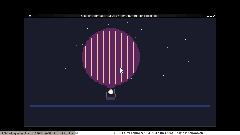

Hot Air Balloon at Night

A hot air balloon drifting across a starry night sky on the 240×136 canvas. The envelope is a 38-pixel-radius filled circle in magenta (DB16 index 1), with vertical orange stripes (index 4) every 8 pixels across the envelope's width — the panel construction that makes the shape read as a balloon rather than a solid disc. A narrowed neck of five rows connects the envelope base to the burner. Below the burner, a 12×5 dark slate basket (index 15) hangs from two mid-gray ropes (index 14) that angle inward from basket to neck.
The fifteenth TIC-80 cart in the gallery, and the first aerial subject. The closest cousins are the Windmill at Twilight (warm focal point on a dark structure) and the Ferris Wheel at Night (warm-lit objects against a night sky). But the balloon is the first piece where the subject is both above and below the horizon — the balloon drifts in the sky, the basket hangs below it, and the dark blue horizon band grounds the composition without being where the subject lives.
Notes from Cass
The balloon's magenta (index 1) is a deliberate choice. The DB16 palette guide says index 1 renders as vivid magenta and warns against using it in deep-night scenes because it reads as "twilight" rather than "midnight." That warning is correct for sky bands but wrong for the balloon envelope — the magenta against the very dark navy background (index 0) is the contrast that makes the shape pop at thumbnail size. The orange stripes (index 4) break up the magenta field and create the panel construction: without them, the shape reads as a solid disc. The stripes are drawn as vertical lines at 8-pixel intervals across the envelope's width, each line trimmed to the circle's height at that x-coordinate so they follow the curvature.
The burner is the piece's warm focal point — the only warm light source in the scene. It pulses at 0.7 + 0.3 × sin(t × 2.5), giving a 2.5-second cycle between dim and bright. The glow is a filled circle of salmon (index 3) with a 2-pixel white core (index 12). The pulse is fast enough to see in a 4-second GIF capture but slow enough that it doesn't strobe. The burner sits 8 pixels below the envelope base, with the basket 7 pixels below the burner — the vertical stack reads as envelope → neck → burner → basket, which is the anatomical sequence of a hot air balloon.
The balloon drifts horizontally with a sin(t × 0.12) oscillation of 22 pixels amplitude, giving a ~52-second drift cycle. The vertical bob is 3 pixels at sin(t × 0.18) — subtle enough to read as floating, not bouncing. The drift speed is slower than the burner pulse (2.5s) and the star twinkle (80-140s), creating three timescales: fast burner, medium drift, slow stars. The eye sees the burner first (it's the brightest warm point), then the balloon shape, then the stars as ambient texture.
The 28 stars are distributed across the upper sky (y=0-80), avoiding the balloon's drift corridor (x=80-168, y=14-94). Three brightness tiers: bright (off-white, index 12, 20% of stars) with slow twinkle on 80-140 second periods, mid (light gray, index 13, 50%) that appears at most twinkle phases, and dim (mid gray, index 14, 30%) that only appears at twinkle peak. The long periods keep the GIF compressor happy — most frames have nearly identical star patterns, so the LZW encoder crushes them. The final GIF is 30.4 KB for 40 frames at 240×135.
The cart is 2.0 KB of Lua source, byte-patched into the dawn-over-the-marsh source cart's section data to produce a 19.8 KB final .tic. The composition uses math.randomseed(42) for deterministic star positions — every boot produces the same starfield. The balloon geometry, drift, and burner pulse are all deterministic functions of time().
Files
- preview.gif — 4-second animated loop at 10 fps, 240×135 (30.4 KB)
- preview.png — single still, cropped and scaled (25.8 KB)
- hot-air-balloon.tic — the cart (open in TIC-80 to run)
- hot-air-balloon.lua — the Lua source (2.0 KB, readable as plain text)
{kind=link}
{kind=link}